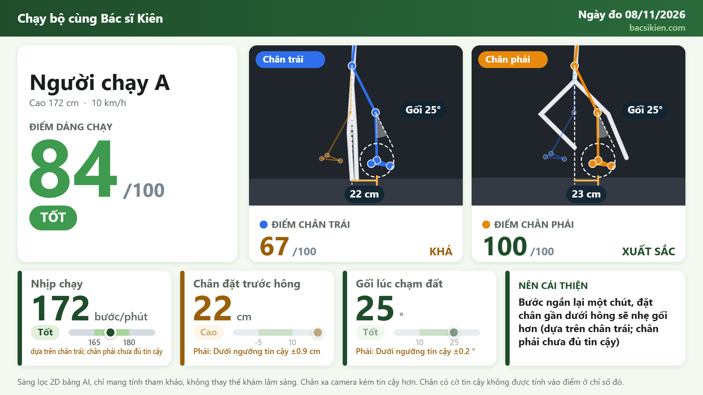
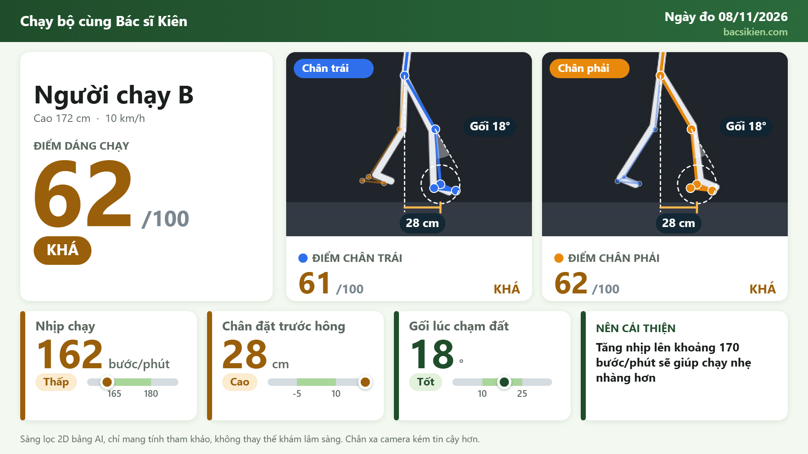

Quy trình 3 bước
Đăng ký thông tin
Họ tên, chiều cao (không bắt buộc).
Chạy 2 phút
Camera đặt ngang hông, có thể quay thêm góc sau lưng.
Nhận báo cáo
Điểm tổng, điểm từng chân, chỉ số chính và khuyến nghị.
Kết quả mẫu

Nhịp chạy tốt (172 bước/phút), gối chạm đất tốt (25°). Nên bước ngắn lại một chút, đặt chân gần dưới hông.

Nhịp hơi thấp (162 bước/phút), chân đặt xa trước hông (28 cm).
Nhịp thấp (144 bước/phút), chân đặt xa trước hông (27 cm), nên tăng nhịp.
Các chỉ số quan trọng
Nhịp chạy
Là gì: số bước mỗi phút.
Vì sao quan trọng: nhịp thấp thường đi kèm bước dài, chân đặt xa trước thân; tăng nhịp 5–10% có thể giảm tải gối và hông.
Khoảng tham khảo: 165–180 bước/phút (phạt điểm khi thấp hơn).
Tài liệu [1] [2]Chân đặt trước hông (overstride)
Là gì: khoảng cách từ bàn chân đến hông theo phương ngang lúc chạm đất.
Vì sao quan trọng: chân đặt quá xa phía trước tạo lực phanh và tăng tải gối.
Khoảng tham khảo: −5 đến 10 cm (phạt điểm khi lớn hơn 10 cm).
Tài liệu [3] [1] [4]Góc gối lúc chạm đất
Là gì: độ gập của gối ngay khi bàn chân chạm đất.
Vì sao quan trọng: gối hơi gập giúp hấp thụ lực va chạm; gối quá duỗi làm lực dồn lên khớp.
Khoảng tham khảo: 10–25°.
Tài liệu [3] [4]Xem thêm
Góc cẳng chân lúc chạm đất
Là gì: độ nghiêng của cẳng chân so với phương thẳng đứng lúc chạm đất.
Vì sao quan trọng: cẳng chân đưa mạnh ra trước là dấu hiệu overstride.
Khoảng tham khảo: 0–12°.
Tài liệu [3] [7]Gập gối giữa pha trụ
Là gì: độ gập gối tối đa khi chân chống đỡ cơ thể.
Vì sao quan trọng: cho biết gối hấp thụ lực nhiều hay ít.
Khoảng tham khảo: 30–50°.
Chưa có trích dẫnĐộ nghiêng thân trước
Là gì: góc thân so với phương thẳng đứng.
Vì sao quan trọng: thân quá thẳng dễ đặt chân xa trước; gập nhiều tăng tải hông và lưng.
Khoảng tham khảo: 4–10°.
Chưa có trích dẫnDuỗi hông lúc rời đất
Là gì: độ duỗi hông khi chân đẩy rời mặt đất.
Vì sao quan trọng: duỗi hạn chế có thể liên quan độ linh hoạt cơ gập hông hoặc sức mạnh mông.
Khoảng tham khảo: 5–20°.
Chưa có trích dẫnThời gian chạm đất
Là gì: thời gian bàn chân tiếp xúc mặt máy mỗi bước.
Vì sao quan trọng: chạm đất lâu thường kèm bước dài và phanh.
Khoảng tham khảo: 200–300 ms (ước lượng, chưa kiểm chứng).
Tài liệu [8] (cách xác định mốc chạm đất)Cân bằng trái–phải
Là gì: độ lệch nhịp bước và thời gian chạm đất giữa hai chân.
Vì sao quan trọng: hai chân khác nhau nhiều có thể do mệt, yếu một bên hoặc né đau.
Khoảng tham khảo: lệch nhịp dưới 4%, lệch thời gian chạm đất dưới 8% (ước lượng, chưa kiểm chứng).
Chưa có trích dẫnTài liệu tham khảo
- Heiderscheit BC, Chumanov ES, Michalski MP, Wille CM, Ryan MB. Effects of step rate manipulation on joint mechanics during running. Med Sci Sports Exerc. 2011;43(2):296–302.Hỗ trợ: tăng nhịp 5–10% giảm tải gối, hông.
- Schubert AG, Kempf J, Heiderscheit BC. Influence of stride frequency and length on running mechanics: a systematic review. Sports Health. 2014;6(3):210–217.Hỗ trợ: nhịp chạy, độ dài bước.
- Wille CM, Lenhart RL, Wang S, Thelen DG, Heiderscheit BC. Ability of sagittal kinematic variables to estimate ground reaction forces and joint kinetics in running. J Orthop Sports Phys Ther. 2014;44(10):825–830.Hỗ trợ: chân đặt trước hông, góc cẳng chân và góc gối lúc chạm đất.
Xem thêm
- Souza RB. An evidence-based videotaped running biomechanics analysis. Phys Med Rehabil Clin N Am. 2016;27(1):217–236.Hỗ trợ: quy trình quay video và các chỉ số nhìn từ mặt bên.
- Pipkin A, Kotecki K, Hetzel S, Heiderscheit B. Reliability of a qualitative video analysis for running. J Orthop Sports Phys Ther. 2016;46(7):556–561.Hỗ trợ: độ tin cậy của phân tích video.
- Dingenen B, Malliaras P, Janssen T, Ceyssens L, Vanelderen R, Barton CJ. Two-dimensional video analysis can discriminate differences in running kinematics between recreational runners with and without running-related knee injury. Phys Ther Sport. 2019;38:184–191.Hỗ trợ: video 2D thấy khác biệt (hông/khung chậu giữa pha trụ) giữa người có và không đau gối.
- Lieberman DE, Venkadesan M, Werbel WA, et al. Foot strike patterns and collision forces in habitually barefoot versus shod runners. Nature. 2010;463:531–535.Hỗ trợ: kiểu tiếp đất của bàn chân.
- Zeni JA Jr, Richards JG, Higginson JS. Two simple methods for determining gait events during treadmill and overground walking using kinematic data. Gait Posture. 2008;27(4):710–714.Hỗ trợ: xác định mốc chạm đất.
- Bazarevsky V, Grishchenko I, Raveendran K, et al. BlazePose: On-device real-time body pose tracking. arXiv:2006.10204; 2020.Hỗ trợ: mô hình nhận dạng tư thế của MediaPipe.
Câu hỏi thường gặp
Có cần gắn cảm biến không?
Không, AI chỉ cần video.
Video có được gửi đi đâu không?
Phân tích ngay trên máy đo; chỉ kết quả được lưu để bác sĩ theo dõi.
Kết quả có chính xác không?
Đây là công cụ sàng lọc, giúp phát hiện dấu hiệu cần chú ý; không thay thế khám và chẩn đoán của bác sĩ.